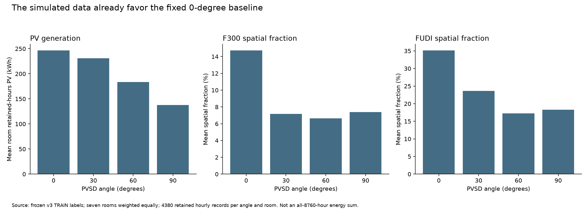
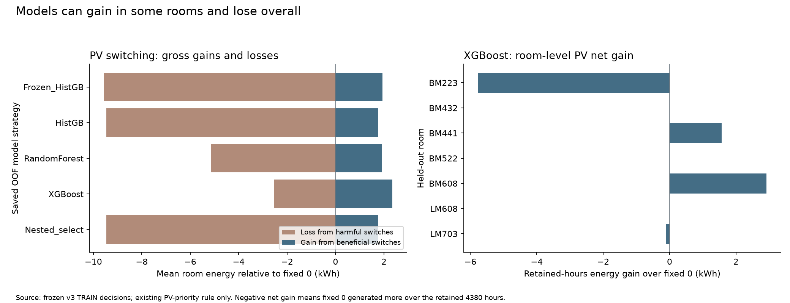

模拟数据中的0°本来就强，目标场景与此一致；模型在少数偏离0°的机会里又出现净损失。三者共同作用，不能只归因于某一种算法。
本次只分析：新拟合0、新模型预测0、TEST读取/预测/评分0。本报告使用冻结的7个TRAIN房间预测；没有修改目标、阈值或权重，没有执行下一轮试验。
| 角度 | 每房间保留时段PV kWh | 平均F300 % | 平均FUDI % |
|---|

这是现有标签的结构，不是数据出错的证明。0°的几何含义、PV板法线、面积/容量、遮挡几何和时间对齐仍缺少来源确认。当前不能把0°直接解释成全开、水平或无遮挡，也不能据此断言模拟错误。
采光分数为 D=(F300+FUDI)/2。300–3000 lux的空间同时被两项计入；100–300 lux仅进入FUDI，大于3000 lux仍进入F300。因此这个分数并不是独立的采光、眩光和热舒适综合评价。两项比例不足以唯一重建过亮空间比例或眩光。
平衡分数为 0.5D+0.5PV/s，s是六个训练房间正PV的95分位数，各折约0.117–0.152 kWh；0.5:0.5不自动代表工程价值相等。下面是候选角度相对0°的两项分数变化，按房间与保留小时平均。不同角度的主导项并不相同，不能简单判断为采光权重总是过高。
| 候选角度 | 平均采光项变化 | 平均PV项变化 | PV增加被采光减少抵消的小时比例 |
|---|
评价口径修正：Constrained_PV的保存主损失只统计采光缺口，PV是另列的次级结果。之前“四种场景固定0°更好”的说法应限定为相应保存指标，不能解释为固定0°在完整的“先满足采光，再最大化PV”目标上全面更好。后续需将可行性与同等可行条件下的PV分别列为主评价。
| 方法 | 偏离0°比例 | 偏离后有害比例 | 0°平均损失 | 模型平均损失 | 模型减基线损失 |
|---|
损失单位：PV为逐时kWh，另两项为目标分数。偏离后有害比例以全部房间的偏离小时汇总；它不等于逐房间条件比例的平均。正差值说明固定0°更好。
模型损失 − 固定0°损失 = 有害切换损失 − 有益切换收益。这个恒等式已对105个房间—目标—模型组合核对。
| 方法 | 切换收益总和 | 切换损失总和 | 相对0°净收益 |
|---|
PV目标的总和单位为kWh；另外两项目标为分数×小时，不是发电量。

| 目标 | 0°唯一最优 | 0°并列最优 | 四角度全相同 | 0°近优比例 | 超出既定容限的改善机会 |
|---|
“近优容限”沿用v3预设值：PV 0.0001 kWh，采光和平衡0.005分数。本次未搜索新容限。机会指模拟Oracle相对0°的收益大于上述容限，不能解释为已确认的工程收益门槛。
状态：待确认，尚未批准、尚未执行。纯PV有明确的kWh评价，也保留一定动态收益空间，适合先检验模型能否识别正确切换时刻。最终综合控制仍需确认采光偏好与约束。
ΔPV=PV(候选角度)−PV(0°)。只拟合30°/60°/90°，0°增量固定为0；推断时不输入真实PV(0°)。本方案是根据当前诊断提出的假设，没有保证Δ模型或增益门槛一定更好。若固定0°仍胜出，应保留这个结果。预测损失与决策损失的区分可参见 Smart Predict, then Optimize；这里提议的是简单增量/门槛试验，并未实现或验证论文的SPO方法。内外层职责参照 scikit-learn嵌套验证说明。